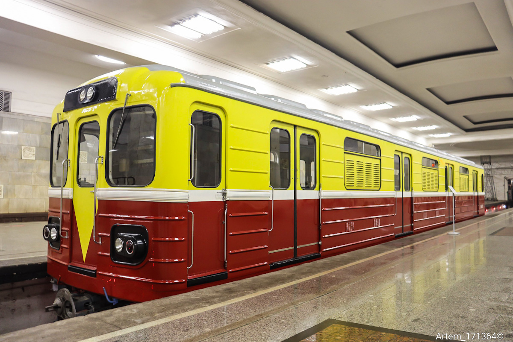
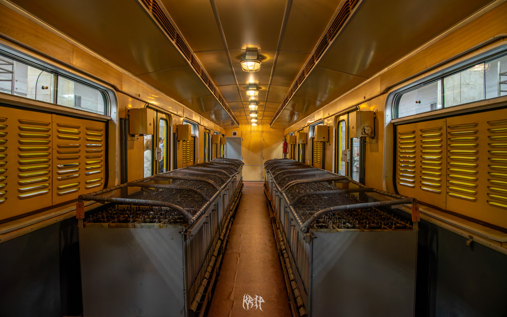
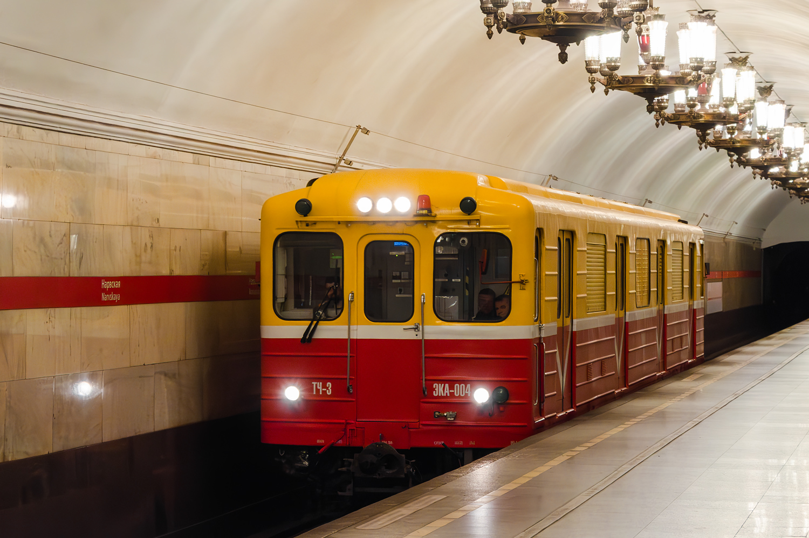
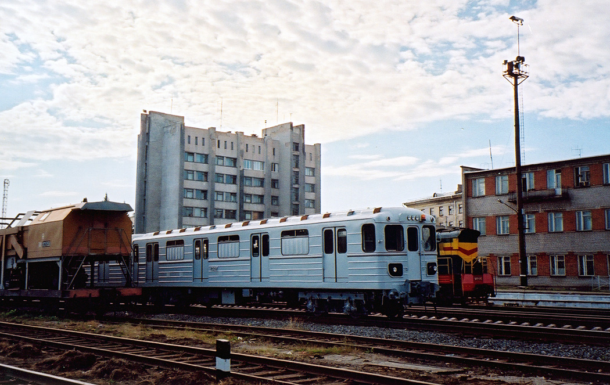

81-580/581/582 ВЭКА
81-580/581/582 ВЭКА — тип контактно-аккумуляторных вагонов метрополитена (по сути — электровоз), разработанный на базе вагонов метро 81-717/714 и выпускаемый Петербургским заводом «Вагонмаш» для служебных нужд метрополитена.
Название «ВЭКА» расшифровывается как «Вагон-Электровоз Контактно-Аккумуляторный». Первый представитель семейства — 81-580 №ВЭКА-001, построенный в 1992 году и сохранившийся до наших дней как музейный экспонат.
Общая информация
🏭 Заводы-изготовители
«Вагонмаш», «Метровагонмаш», ОЭВРЗ
Разработка: Ленинградский вагоностроительный завод имени Егорова (ЗАО «Вагонмаш»)
🔢 Первый экземпляр
ВЭКА-001
Первый экземпляр, отправленный в Москву
📅 Годы постройки
1992 (81-580), 1995 (81-580.1), 2002–2009 (81-581), 2005 (81-581.3), 2015–2016 (81-581.4), 2016–2017 (81-581.5), 2022 (81-581.6)
📍 Текущее местонахождение
Москва (музейный), Санкт-Петербург, Казань, Тегеран
ВЭКА-001 — первый экземпляр, отправленный в Москву. Работал как вагон-электровоз контактно-аккумуляторный. Всего было построено либо модернизировано 17 электровозов разных модификаций.
История создания
Начало разработки
Ленинградский вагоностроительный завод имени Егорова (ЗАО «Вагонмаш») начал разработку контактно-аккумуляторных электровозов для служебных нужд Ленинградского метрополитена для замены устаревших контактно-аккумуляторных электровозов на базе вагонов типа Д, 7 из которых на тот момент эксплуатировались в электродепо Петербургского метрополитена.
Условия эксплуатации требовали наличия торцевых дверей в кабине машиниста для перехода в другие вагоны, в то время как кабины головных вагонов 81-717 не имели сквозного прохода. Поэтому за основу было решено взять кузова промежуточных вагонов 81-714, оснастив их двумя кабинами машиниста с пультами управления по торцам.
Постройка первых двух экземпляров
Заводом выпущены два опытных контактно-аккумуляторных электровоза, получивших обозначение ВЭКА и номера 001 и 002. Первый поступил в электродепо «Калужское» Московского метрополитена, второй — в электродепо «Московское» Петербургского метрополитена. Оба окрашены в жёлто-коричневые цвета.
Эксплуатация и отставка
В ходе эксплуатации выявлен ряд недостатков, оборудование периодически выходило из строя. Электровозы были отставлены от работы. Петербургский электровоз № 002 списан с баланса в 2002 году, дальнейшая судьба неизвестна.
Постройка 81-580.1 для Тегерана
По договорённости с Ираном завод «Вагонмаш» построил 2 контактно-аккумуляторных электровоза модели 81-580.1 (номера 01–02) для строящегося Тегеранского метрополитена. В отличие от 81-580, они не имели торцевых дверей, кабина была аналогична стандартным головным вагонам 81-717. Окраска — ярко-зелёная с белой лобовой частью. Ширина колеи — 1435 мм (европейская).
Серия 81-581 (ЭКА)
Петербургский метрополитен продолжил обновление электровозного парка. Выпущены 4 электровоза 81-581 с асинхронным тяговым приводом. Первый (Эка-01, № 10260) поступил в депо «Автово» в 2003 году. В 2008 году выпущен Эка-02 (кузов вагона № 10356), в 2009 — электровозы 003 и 004 (кузова ОАО «Метровагонмаш»).
81-581.3 для Казани
По заказу Казанского метрополитена опытный метровагон типа 81-561 («Ритор») № 11342 переоборудован в контактно-аккумуляторный электровоз с асинхронным приводом. Получил бортовой номер 10297 и отправлен в электродепо «Аметьево» Казанского метрополитена.
81-581.4
Петербургский метрополитен заказал АО «Технологии метро» два электровоза на базе 81-581 с обновлённым электрооборудованием. За основу взяты кузова от промежуточных вагонов 81-541.3К (2013). Сборка — на ОЭВРЗ, завершена в марте 2015 года. Электровозы получили обозначение 81-581.4 и бортовые ЭКА-05 и ЭКА-06.
81-581.5 и 81-581.6
В мае 2016 года на ОЭВРЗ началась сборка двух электровозов ЭКА-07 и 08 модели 81-581.5 (усовершенствованная версия 81-581.4). В 2017 году выпущены ещё два — ЭКА-09 и ЭКА-10. В 2022 году — ЭКА-11 и ЭКА-12 модели 81-581.6.
Судьба ВЭКА-001: Московский электровоз № 001 долгое время использовался как хозяйственное помещение в электродепо «Калужское». Затем был передан в электродепо «Выхино», отремонтирован и перекрашен в жёлто-красную схему. В 2015 году выставлен на станции «Партизанская» в рамках выставки к 80-летию метрополитена. Демонстрируется там и в последующие годы.
Модификации
Всего было построено либо модернизировано 17 электровозов семейства ВЭКА. Ниже — все модификации с кратким описанием.
81-580 (ВЭКА)
Первая модель. Построено 2 экземпляра в 1992 году. Кузова промежуточных вагонов 81-714 с двумя кабинами. Жёлто-коричневая окраска.
- Номера: 001 (Москва), 002 (Петербург)
- Коллекторные ТЭД
- № 001 — музейный
81-580.1
Модификация для Тегеранского метрополитена. Построено 2 экземпляра в 1995 году. Кабина как у головных вагонов 81-717. Ярко-зелёная окраска с белой лобовой частью.
- Номера: 01–02
- Ширина колеи: 1435 мм
- Судьба неизвестна
81-581 (ЭКА)
Новое поколение с асинхронным тяговым приводом. Построено 4 экземпляра в 2002–2009 годах. Жёлто-красная окраска.
- Мощность: 456 кВт (4 × 114)
- Номера: Эка-01, Эка-02, 003, 004
- Все 4 в регулярной эксплуатации в Петербурге
81-581.3
Построен в 2005 году для Казанского метрополитена. Переоборудован из опытного вагона 81-561 «Ритор» № 11342. Мощность повышена до 680 кВт (4 × 170).
- Бортовой номер: 10297
- Депо «Аметьево» (Казань)
- Эксплуатируется по настоящее время
81-581.4
Построено 2 экземпляра в 2015 году на ОЭВРЗ. Кузова от промежуточных вагонов 81-541.3К. Современное оборудование, аккумуляторы Tensor TCSM 2030.
- Номера: ЭКА-05, ЭКА-06
- Автономный ход: 7–8 часов
- Депо: ТЧ-6 «Выборгское», ТЧ-5 «Невское»
81-581.5
Усовершенствованная версия 81-581.4. Сборка начата в мае 2016 года на ОЭВРЗ. Построено 4 экземпляра.
- Номера: ЭКА-07, 08, 09, 10
- Депо: «Автово», «Невское», «Выборгское», «Северное», «Южное»
81-581.6
Новейшая модификация. Построено 2 экземпляра в 2022 году. Поступили в метрополитен в феврале 2022 года.
- Номера: ЭКА-11, ЭКА-12
- Депо: «Северное» (11), «Южное» (12)
Итог: За 30 лет семейство ВЭКА прошло путь от опытных 81-580 с коллекторными двигателями до современных 81-581.6 с асинхронным приводом и аккумуляторами Tensor. Сегодня электровозы ВЭКА работают в Петербурге, Казани, а один музейный экземпляр — в Москве.
Конструктивные особенности
⚡ Асинхронный тяговый привод
Начиная с 81-581, электровозы оснащены асинхронным приводом, который впоследствии стал стандартом для новых поездов. Первые 81-580 имели коллекторные ТЭД.
🔋 Контактно-аккумуляторный
Электровозы работают как от контактного рельса (750 В), так и от аккумуляторов. Это позволяет им работать на обесточенных участках и в депо.
🪟 Конструкция кузова
Кузов цельнометаллический стальной сварной, по аналогии с вагонами Еж3 и промежуточными 81-714. Две кабины машиниста по торцам, аккумуляторное помещение между ними.
🚪 Двери и сцепки
По 4 двухстворчатых раздвижных двери с каждой стороны, ведущие в аккумуляторный отсек. Двери открываются вручную. На одном торце — автосцепка СА-3, на другом — Шарфенберга.
🔦 Оригинальные фары
Из-за снятия с производства фар для вагонов Ем и Еж3 в нижнюю часть торца кабин вмонтированы стандартные фарные блоки вагонов 81-717, что придало электровозам оригинальный внешний вид.
💺 Аккумуляторное помещение
Занимает место пассажирского салона между кабинами. Тяговые аккумуляторы расположены на стеллажах продольно в два ряда по бокам от центрального прохода. Оконные проёмы оборудованы металлическими решётками.
Вагон 81-580 стал прототипом для многих технических решений. Асинхронный привод, впервые испытанный на электровозах ВЭКА, в дальнейшем использовался на поездах «Яуза», «Ока», «Москва».
Технические характеристики
| Параметр | Значение |
|---|---|
| Годы постройки | 1992 (81-580), 1995 (81-580.1), 2002, 2008, 2009 (81-581), 2005 (81-581.3), 2015, 2016 (81-581.4), 2016, 2017 (81-581.5), 2022 (81-581.6) |
| Страна постройки | Россия 🇷🇺 |
| Заводы | «Вагонмаш», «Метровагонмаш», ОЭВРЗ |
| Всего построено | 17 (всего), в т.ч.: 81-580 — 2; 81-580.1 — 2; 81-581 — 4; 81-581.3 — 1; 81-581.4 — 2; 81-581.5 — 4; 81-581.6 — 2 |
| Тип токосъёма | Нижний боковой контактный рельс (токосъём снизу) + аккумуляторы |
| Род тока и напряжение | 750 В постоянного тока |
| Типы вагонов | к/а электровоз |
| Длина вагона | 19 210 мм (по осям автосцепок Шарфенберга); 19 260 мм (по осям автосцепки СА-3 и Шарфенберга) |
| Ширина | 2 670 мм |
| Высота | 3 700 мм |
| Полная колёсная база вагона | 14 700 мм |
| Расстояние между шкворнями тележек | 12 600 мм |
| Колёсная база тележек | 2 100 мм |
| Диаметр колёс | 860 мм |
| Ширина колеи | 1 520 мм; 1 435 мм (81-580.1) |
| Масса тары | 54 т |
| Нагрузка от оси на рельсы | 132 кН (13,5 тс) |
| Материал вагона | Сталь |
| Выходная мощность | 81-581: 456 кВт; 81-581.3: 680 кВт |
| Тип ТЭД | Коллекторные (81-580), асинхронные (81-581) |
| Мощность ТЭД | 81-581: 4 × 114 кВт; 81-581.3: 4 × 170 кВт |
| Макс. скорость | 50 км/ч |
| Макс. служебная скорость | 35–50 км/ч |
| Ускорение при пуске | 0,5–1,2 м/с² |
| Ускорение при торможении | 0,7–1 м/с² |
| Электрическое торможение | Рекуперативно-реостатное |
| Тормозная система | Пневматическая, электропневматическая, электрическая |
Эксплуатация
| Параметр | Значение |
|---|---|
| Страны эксплуатации | Россия 🇷🇺, Иран 🇮🇷 |
| Метрополитены | Москва (81-580), Петербург (81-580, 581, 581.4, 581.5, 581.6), Казань (81-581.3), Тегеран (81-580.1) |
| Годы эксплуатации | с 1992 (81-580), с 1995 (81-580.1), с 1993 (81-581), с 2005 (81-581.3), с 2016 (81-581.4 и .5), с 2022 (81-581.6) |
Где увидеть ВЭКА-001
Выставки на «Партизанской»
Вагон можно увидеть на выставках на станции «Партизанская» к дню рождения Московского метрополитена (15 мая).
Музейный фонд
Вагон сохранён для истории и находится в музейном фонде Московского метрополитена.
📅 Когда можно увидеть: Обычно вагон выставляется на станции «Партизанская» в дни празднования дня рождения Московского метрополитена (15 мая).
Фотогалерея

Первый экземпляр, музейный экспонат.

Внутреннее убранство электровоза.

Электровоз с асинхронным приводом.

Для Казанского метрополитена.
📸 Фото взяты с transphoto
Нажмите на фото для увеличения
«ВЭКА-001 — уникальный вагон-электровоз, который стал важным этапом в развитии асинхронного привода. Построенный на Ленинградском вагоностроительном заводе, он до сих пор радует посетителей выставок на станции „Партизанская“. А его потомки — 81-581.6 — продолжают работать в Петербургском метрополитене».